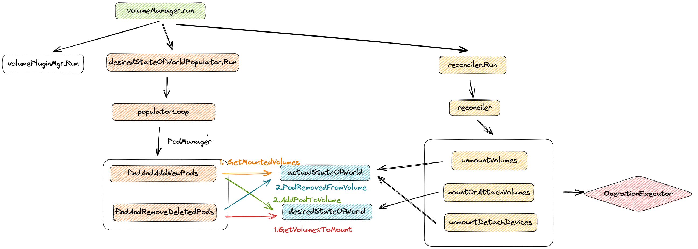

POSTS
Kubelet VolumeManager机制流程分析
Kubelet VolumeManager机制流程分析#
Kubelet Volume相关逻辑主要在VolumeManager模块

- Mount 阶段则由对应节点的 kubelet 中的 volume manager 处理。
- volume manager 获取 node.Status.VolumesAttached 属性值，发现 volume 已被标记为 attached, 就会进行 mount 操作
- k8s中涉及存储的组件主要有：attach/detach controller、pv controller、volume manager、volume plugins、scheduler。每个组件分工明确：
- attach/detach controller：负责对 volume 进行 attach/detach
- persistent volume controller：负责处理 pv/pvc 对象，包括 pv 的 provision/delete
- kubelet volume manager：主要负责对 volume 进行 mount/unmount
- volume plugins：包含 k8s 原生的和各厂商的的存储插件
挂载流程#
第一步是在准备 volume（宿主机目录），第二步才是真正的挂载操作。
- k8s 中的 Volume 属于 Pod 内部共享资源存储，生命周期和 Pod 相同，与 Container 无关，即使 Pod 上的容器停止或者重启，Volume 不会受到影响，但是如果 Pod 终止，那么这个 Volume 的生命周期也将结束。
- 整个挂载流程需要 kube-controller-manager、 kubelet 以及 cri 共同完成，一个完整的流程大致可分为以下 两个步骤：
- 1）远程存储挂载至宿主机
- 1）Attach
- 由 controller 执行，将远程块存储作为一个远程磁盘挂载到宿主机
- 2）Mount
- 由 kubelet 执行，将远程磁盘格式化并挂载到 Volume 对应的宿主机目录
- 一般是在 /var/lib/kubelet 目录下
- 1）Attach
- 2）将宿主机目录挂载至 Pod 中
- 由 CRI 执行，将宿主机上的目录挂载到 Pod 中
- 1）远程存储挂载至宿主机
- NFS 本身就是文件系统就可以省略 Attach
远程存储挂载至宿主机#
k8s 的 api 就是只有使用 PV 的时候执行该流程
- 基础阶段
- 阶段一：Attach，挂载磁盘
- 阶段二：Mount，格式化磁盘并 mount 至宿主机目录
- 最终的准备好的volume都会放到以下目录
/var/lib/kubelet/pods/<Pod的ID>/volumes/kubernetes.io~<Volume类型>/<Volume名字>
volumeManager相关结构体#
// volumeManager implements the VolumeManager interfacetype
volumeManager struct {
// kubeClient is the kube API client
kubeClient clientset.Interface
// 实现初始化好的插件管理对象
volumePluginMgr *volume.VolumePluginMgr
// 包含了vm想要达成的一个状态：那些卷应该被连接，那个pods会引用这些卷。从 podManager获取数据
desiredStateOfWorld cache.DesiredStateOfWorld
// 包含了实际的vm状态。在 attach, detach, mount, and unmount 操作的时候记录这些信息
actualStateOfWorld cache.ActualStateOfWorld
// 异步执行 attach, detach, mount,unmount操作
operationExecutor operationexecutor.OperationExecutor
// 运行异步定期循环，通过使用operationExecutor 来协调desiredStateOfWorld与actualStateOfWorld
reconciler reconciler.Reconciler
// 运行异步定期循环，使用 PodManager 填充 desiredStateOfWorld
desiredStateOfWorldPopulator populator.DesiredStateOfWorldPopulator
// csiMigratedPluginManager keeps track of CSI migration status of plugins
csiMigratedPluginManager csimigration.PluginManager
// intreeToCSITranslator translates in-tree volume specs to CSI
intreeToCSITranslator csimigration.InTreeToCSITranslator
}
actualStateOfWorld#
保存当前node的所有实际挂载状态
type actualStateOfWorld struct {
nodeName types.NodeName
// 存储所有卷挂载情况
attachedVolumes map[v1.UniqueVolumeName]attachedVolume
-> mountedPods map[volumetypes.UniquePodName]mountedPod
}
desiredStateOfWorld#
期望挂载状态
type desiredStateOfWorld struct {
// 期望挂载的情况
volumesToMount map[v1.UniqueVolumeName]volumeToMount
-> podsToMount map[types.UniquePodName]podToMount
}
reconcile#
func (rc *reconciler) reconcile() {
// Unmounts are triggered before mounts so that a volume that was
// referenced by a pod that was deleted and is now referenced by another
// pod is unmounted from the first pod before being mounted to the new
// pod.
// 遍历 node 上的 mountedVolume，检查 pod 还在不在，如果 pod 不在了就把对应 volume unmount
rc.unmountVolumes()
// Next we mount required volumes. This function could also trigger
// attach if kubelet is responsible for attaching volumes. // If underlying PVC was resized while in-use then this function also handles volume
// resizing.
// 遍历需要 mount 或者 attach 的 volume，看下是不是真的 mount 或者 attach了，没有就执行 mount 或者 attach.设备需要先 attach，因此 kubelet 这里会一直阻塞，产生一个叫做 VolumeNotAttached 的错误
rc.mountOrAttachVolumes()
// Ensure devices that should be detached/unmounted are detached/unmounted.
// unmountDetachDevices：如果某个设备的多个 volume 都是 unmount 状态那就把该设备 detach 掉
rc.unmountDetachDevices()
// After running the above operations if skippedDuringReconstruction is not empty
// then ensure that all volumes which were discovered and skipped during reconstruction
// are added to actualStateOfWorld in uncertain state.
if len(rc.skippedDuringReconstruction) > 0 {
rc.processReconstructedVolumes()
}
}
desiredStateOfWorldPopulator#
运行异步定期循环，使用 PodManager 填充 desiredStateOfWorld
wait.PollUntil(dswp.loopSleepDuration, func() (bool, error) {
done := sourcesReady.AllReady()
dswp.populatorLoop()
-> {
dswp.findAndAddNewPods()
dswp.findAndRemoveDeletedPods()
}
return done, nil
}, stopCh)
findAndAddNewPods#
func (dswp *desiredStateOfWorldPopulator) findAndAddNewPods() {
//...
for _, pod := range dswp.podManager.GetPods() {
//...
// 填充 desiredStateOfWorld
dswp.processPodVolumes(pod, mountedVolumesForPod)
//...
-> uniqueVolumeName, err := dswp.desiredStateOfWorld.AddPodToVolume(
uniquePodName, pod, volumeSpec, podVolume.Name, volumeGidValue, seLinuxContainerContexts[podVolume.Name])
}
}
findAndRemoveDeletedPods#
遍历所期望状态下的所有pod，如果informer中不再存在，则将其移除
func (dswp *desiredStateOfWorldPopulator) findAndRemoveDeletedPods() {
//...
pod, podExists := dswp.podManager.GetPodByUID(volumeToMount.Pod.UID)
if podExists {
// ...
// 判断pod中容器是否都已经终止
if !dswp.podStateProvider.ShouldPodRuntimeBeRemoved(pod.UID) {
continue
}
// 是否保持终止pod的卷 node上注解KeepTerminatedPodVolumesAnnotation
if dswp.keepTerminatedPodVolumes {
continue
}
}
removed := dswp.actualStateOfWorld.PodRemovedFromVolume(volumeToMount.PodName, volumeToMount.VolumeName)
if removed && podExists {
continue
}
// 删除期望的状态，以及相关记录
dswp.desiredStateOfWorld.DeletePodFromVolume(
volumeToMount.PodName, volumeToMount.VolumeName)
dswp.deleteProcessedPod(volumeToMount.PodName)
}
mountOrAttachVolumes#
Kubelet的Volume挂载流程，调用OperationExecutor执行MountVolume
MountVolume#
func (oe *operationExecutor) MountVolume(...) error {
-> func (og *operationGenerator) GenerateDetachVolumeFunc(...)(...) {
volumePlugin, err :=
og.volumePluginMgr.FindPluginBySpec(volumeToMount.VolumeSpec)
...
mountVolumeFunc := func() volumetypes.OperationContext {
// 获取挂载卷插件
volumePlugin, err := og.volumePluginMgr.FindPluginBySpec(volumeToMount.VolumeSpec)
...
// 检查node亲和性
affinityErr := checkNodeAffinity(og, volumeToMount)
// 获取mounter，所有的挂载类型都拥有
volumeMounter, newMounterErr := volumePlugin.NewMounter(...)
//获取attacher，所有的卷都需要挂载以及接触挂载，但是不是所有的都需要attacher
attachableVolumePlugin, _ := og.volumePluginMgr.FindAttachablePluginBySpec(volumeToMount.VolumeSpec)
...
deviceMountableVolumePlugin, _ := og.volumePluginMgr.FindDeviceMountablePluginBySpec(volumeToMount.VolumeSpec)
// 核心 设置挂载文件（创建路径并且写入内容）
mountErr := volumeMounter.SetUp(...)
// setup失败后会删除卷
-> func (b *configMapVolumeMounter) SetUpAt(dir string, mounterArgs volume.MounterArgs) error {
...
// 获取configmap资源，如果不是可选项找不到的时候会报configmap not fount错误
configMap, err := b.getConfigMap(b.pod.Namespace, b.source.Name)
// 拼装payload map[string]volumeutil.FileProjection对象（文件名和文件投影信息）,但没有指定mode的时候采用默认模式
payload, err := MakePayload(b.source.Items, configMap, b.source.DefaultMode, optional)
// 创建挂载点，获取当前卷的所有挂载路径
// 1. 不能再rootfs之外创建目录
// 2. 检查每个装载点，看看它是否嵌套在这个卷下面
volumeutil.MakeNestedMountpoints(b.volName, dir, b.pod)
}
}
}
}